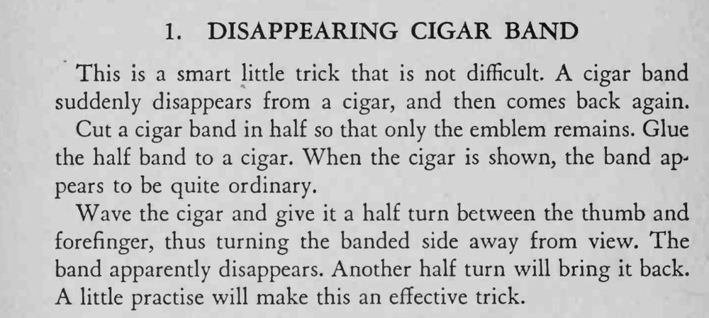

雪茄上的烟标突然消失，魔术师把雪茄再转半圈，烟标又回到了原处。
转动要一次完成、别停顿，练到观众看不出前后是同一面。

This is a smart little trick that is not difficult. A cigar band suddenly disappears from a cigar, and then comes back again. Cut a cigar band in half so that only the emblem remains. Glue the half band to a cigar. When the cigar is shown, the band appears to be quite ordinary. Wave the cigar and give it a half turn between the thumb and forefinger, thus turning the banded side away from view. The band apparently disappears. Another half turn will bring it back. A little practise will make this an effective trick.